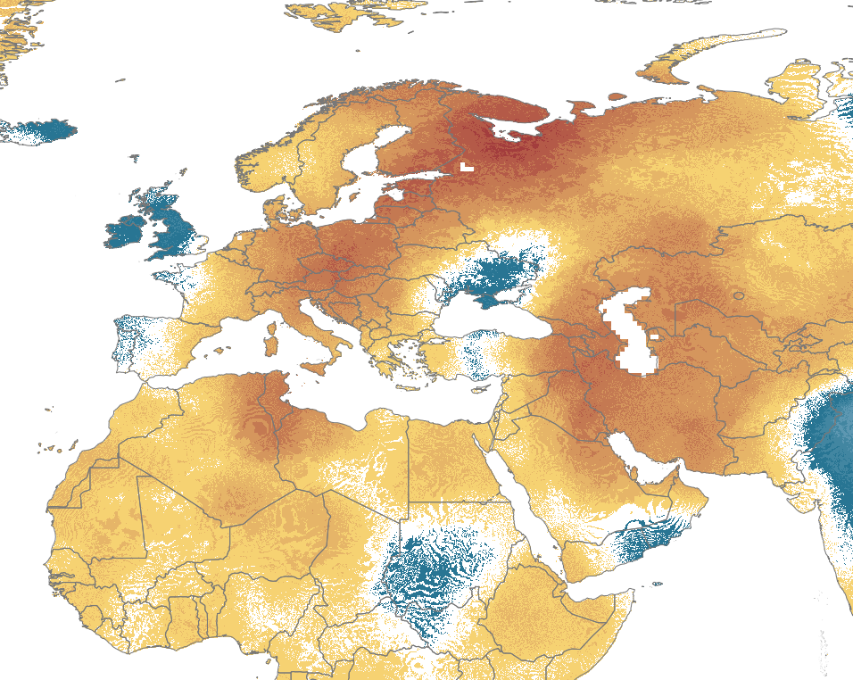

Raster Analysis Using MapServer#
Introduction#
MapServer has the capability to read and serve both raster and vector data. Raster data support is managed through the use of GDAL. This post shows how to perform raster analysis dynamically using MapServer, and display the result. To explore the Mapfile used in this example, along with the generated output layer, you can visit the following link: https://app.mapserverstudio.net/#9JBVADFh.
Raster data consists of cells or pixels where each cell has a value representing a particular attribute. If you have several raster datasets covering the same area you can create new datasets by making calculations for cells in the same location, but from different inputs. See What is Map Algebra for good introduction to the subject.
The image below shows an example of adding together the cells in one raster to the values in another, to produce a new raster.
In this example, we’ll calculate the difference between cells in two datasets.
GDAL and Raster Analysis#
Raster Algebra support was added to GDAL 2.2 in 2016 based on Request for Comment #62. GDAL includes a set of Default Pixel Functions that allow for raster analysis without the need to write any code. These include functions such as:
cmul- multiply two rastersdiff- computes the difference between 2 raster bandsdiv- divide one raster band by anothersum- sum two or more rasters
For more advanced raster analysis you can write your own pixel functions in Python, and register them with GDAL - these would then be available within MapServer.
The outputs of the raster analysis are a virtual GDAL dataset, in the GDAL VRT format. MapServer layers can be configured to style and serve these VRT layers as OGC services such as WMS, WFS, and WCS.
Source Datasets#
This example uses two datasets where the maximum temperature value in August is stored in each cell. Each cell is 2.5 minutes this is ~21 km2 at the equator. The first dataset uses temperatures from August 1960, and the second from August 2021. Please keep in mind that this analysis serves as an example, and does not hold scientific validity since I am not a climate scientist!
The datasets are available from www.worldclim.org and hosted at https://geodata.ucdavis.edu. The GeoTIFFs are downscaled from the source datasets created by the Climatic Research Unit, University of East Anglia.
Incidentally, there is an interesting story associated with the Climatic Research Unit (CRU), where documents and data were compromised through a cyberattack. Subsequently, selective data was chosen by climate skeptics, which garnered significant global attention. To quote from The Story behind the Trick:
The science establishment should have had faith in the scientific method and - in the early days of the ‘scandal’ - directly attacked the ludicrous claim that a hoax had been perpetrated on the world, over many years, orchestrated by a small group of climate scientists centred in Norwich…”
I remember a visit by two gentlemen from Scotland Yard who earnestly told me they would be using Holmes. I had a momentary sense of time-warp - until they spelled out they meant the Home Office Large Murder Enquiry System (HOLMES).
Analysis Example#
The sample Mapfile is available in MapServer Studio at https://app.mapserverstudio.net/#9JBVADFh.
The August 1960 dataset is named August1960MaxTemp. By default the Mapfile shows the results of the raster analysis,
but the source layers can also be displayed by modifying the LAYER STATUS in the Mapfile.
Note you will need to set the Difference layer STATUS to OFF or it will be displayed over the top of the source layers.
The layer order in a Mapfile defines the order they are rendered, so the last layer in a Mapfile with a STATUS ON will always
be rendered last, and appear at the top of a map output.
LAYER
NAME "August1960MaxTemp"
STATUS OFF # set this to ON
TYPE RASTER
...
LAYER
NAME "Difference"
STATUS ON # set this to OFF
The temperature layers are styled using multiple STYLE blocks. The colour palette applied was based on the advice in Creating a Meaningful Temperature Palette.
Each style block has a DATARANGE and a COLORRANGE. Every pixel is assigned a colour from the colour gradient between the first and second colours, based on its relative position between the min and max data values in the data range.
CLASS
NAME "colorramp"
STYLE
COLORRANGE "#e3edfc" "#287593" # a color gradient from light grey to a shade of blue
# a pixel value of -20 will be light grey, and values from -20 to 0 will be assigned a color from the colour gradient of light grey to blie
DATARANGE -20 0
RANGEITEM "value_0" # this is the name of the value band in the raster, the datasets used in the Mapfile have a single band
END
STYLE
COLORRANGE "#29497b" "#759387"
DATARANGE 0 20
RANGEITEM "value_0"
END
STYLE
COLORRANGE "#bfa96d" "#480d26"
DATARANGE 20 50
RANGEITEM "value_0"
END
END
The August1960MaxTemp layer is shown below. You can export the Map output to various image formats using the Map Exports functionality
in MapServer Studio.
{kind=link}
In this example we are going to make use of GDAL’s diff pixel function. We create a DATA property in a new layer that will refer to the
same two source datasets we are displaying above. We also need to calculate the raster sizes from the sources to enter the
rasterXSize and rasterYSize properties. We can do this using GDAL’s gdalinfo on the command line:
gdalinfo wc2.1_2.5m_tmax_1960-06.tif
This outputs the following, including the size of the raster:
Driver: GTiff/GeoTIFF
Files: wc2.1_2.5m_tmax_1960-06.tif
Size is 8640, 4320
Coordinate System is:
GEOGCRS["WGS 84",
Now we have all the details to populate our DATA clause. This is a block of XML that is added to the Mapfile, and wrapped in quotes.
See the VRT GDAL Virtual Format page for full details.
LAYER
NAME "Difference"
STATUS ON
TYPE RASTER
CONNECTIONTYPE OGR
DATA "
<VRTDataset rasterXSize='8640' rasterYSize='4320'>
<VRTRasterBand dataType='Float32' band='1' subClass='VRTDerivedRasterBand'>
<PixelFunctionType>diff</PixelFunctionType>
<SimpleSource>
<SourceFilename>/data/raster/wc2.1_2.5m_tmax_2021-06.tif</SourceFilename>
</SimpleSource>
<SimpleSource>
<SourceFilename>/data/raster/wc2.1_2.5m_tmax_1960-06.tif</SourceFilename>
</SimpleSource>
</VRTRasterBand>
</VRTDataset>
"
Now we can turn this layer on and MapServer will return a new raster displaying the difference in pixel values between the two raster datasets. We can again style the pixel values to show different colours depending on their values.
{kind=link}
I hope you’ve found this post useful, and please experiment with the Mapfile at https://app.mapserverstudio.net/#9JBVADFh. You can also download the datasets used in the example above and run the Mapfile locally using your own installation of MapServer.